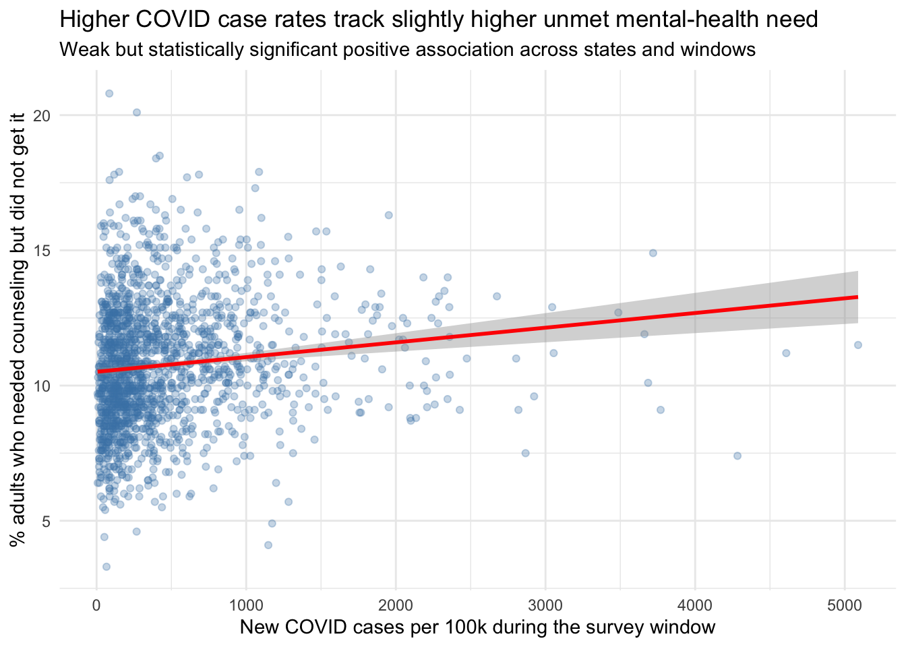

COVID-19 infection rates and unmet mental-health need
Authors
Cedric Fernolend
Peiyue Liu
Published
July 8, 2026
We ask whether US states hit harder by COVID-19 also reported higher unmet need for mental-health support. The cleaning and joining happen in code/01_download.R → code/02_clean.R; this page loads the processed result and answers the two research questions.
4. RQ1: Does COVID intensity relate to unmet mental-health need?
With one comparable pair of numbers per state-window, we fit a straight line: does unmet need go up as the COVID case rate goes up? The slope answers the question; its 95% confidence interval and p-value tell us how sure we are.
Code
m1 <-lm(unmet_need ~ covid_rate, data = joined)summary(m1)
Call:
lm(formula = unmet_need ~ covid_rate, data = joined)
Residuals:
Min 1Q Median 3Q Max
-7.2449 -1.5453 -0.1423 1.4414 10.2448
Coefficients:
Estimate Std. Error t value Pr(>|t|)
(Intercept) 1.051e+01 7.327e-02 143.433 < 2e-16 ***
covid_rate 5.434e-04 1.057e-04 5.142 3.03e-07 ***
---
Signif. codes: 0 '***' 0.001 '**' 0.01 '*' 0.05 '.' 0.1 ' ' 1
Residual standard error: 2.277 on 1674 degrees of freedom
Multiple R-squared: 0.01555, Adjusted R-squared: 0.01496
F-statistic: 26.44 on 1 and 1674 DF, p-value: 3.034e-07
Code
# Population claim -> report the coefficient with its 95% CI, not just the p-value.cbind(estimate =coef(m1), confint(m1))
ggplot(joined, aes(x = covid_rate, y = unmet_need)) +geom_point(alpha =0.3, colour ="steelblue") +geom_smooth(method ="lm", se =TRUE, colour ="red") +labs(title ="Higher COVID case rates track slightly higher unmet mental-health need",subtitle ="Weak but significant positive association across US states and survey windows",x ="New COVID cases per 100k during the survey window",y ="% adults who needed counseling but did not get it" ) +theme_minimal()
`geom_smooth()` using formula = 'y ~ x'

5. RQ2: How did need and COVID co-move nationally over time?
RQ1 compares states; RQ2 instead follows the whole country through time. We build a national COVID case rate the same way (total new cases in each window ÷ US population) and plot it beside national unmet need on a shared time axis, so we can see whether the two rise and fall together across pandemic waves.
Code
national |>select(win_start,`Unmet need (%)`= unmet_need,`COVID cases /100k`= covid_rate) |>pivot_longer(-win_start) |>ggplot(aes(win_start, value)) +geom_line(colour ="darkblue") +geom_point(size =1) +facet_wrap(~name, ncol =1, scales ="free_y") +labs(title ="National unmet mental-health need and COVID case rate over time",x ="Survey window start", y =NULL) +theme_minimal()
Two-panel time series of national unmet mental-health need (top) and the national COVID-19 case rate (bottom), by survey window, Aug 2020 to Apr 2022. Plotting them on a shared time axis shows whether the two series rise and fall together across pandemic waves.
Notes / next steps (for the remaining weeks)
RQ1 association is positive and significant but weak (see coefficient and R²). Refinements to try: a time lag (COVID surge → need a few weeks later) and state fixed effects to control for persistent between-state differences. These are presentation/robustness tasks, not new questions.
The outcome is not fixed yet. OUTCOME_INDICATOR swaps to any single Household Pulse indicator to repeat the whole analysis; we may also broaden “need” to the overall movement across all four indicators or each indicator’s average percentage change between waves, and test which framing tracks COVID most clearly.